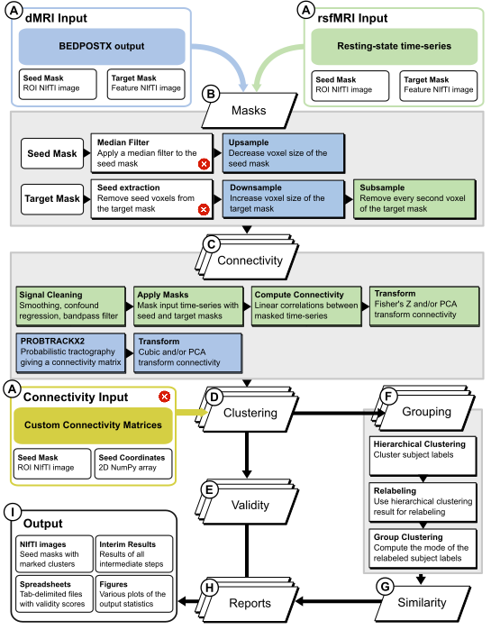

Workflow¶
In this section the processing of the pipeline is described through its various tasks.
Connectivity (resting-state)¶
Load timeseries, roi_mask, target_mask (define target mask here)
Apply smoothing (if selected) using nibabel.processing.smooth_image on the timeseries
Apply the roi and target masks separately to teh timeseries
Nuisance signal regression (confound timeseries) of selected columns (optional) on roi and target-masked timeseries respectively
Calculate the correlation (seed_based_correlation, explain the function)
Apply arctanh transform (optional)
Apply PCA transform (optional) = reduces features (connectivity to target-voxels) of roi voxels
Connectivity (diffusion-weighted imaging)¶
Execute probtrackx2 to get omatrix2
Get fdt_matrix2.dot and create a dense matrix out of it.
Apply cubic transform (optional) = np.power(connectivity, 1 / 3)
Apply PCA transform (optional)
Participant-level Clustering¶
Load the connectivity matrix and apply kmeans (sklearn.cluster.KMeans) for k=n_clusters parameter.
Group-level clustering¶
Aggregate all single-participant clustering results into one matrix, sorted by the participant_id order in the participants file.
calculate pairwise hamming distance (y = pdist(x, metric=’hamming’)) on teh single-participant clustering matrix
Perform hierarchical clustering on y (z = hierarchy.linkage(y, method=linkage, metric=’hamming’)) with the requested linkage algorithm
Calculate the cophenetic correlation between z and y (hierarchy.cophenet(z, y))
Cut the tree at the requested cluster number: hierarchy.cut_tree(z, n_clusters=len(np.unique(x)))
Use the hierarchical clustering as a reference to relabel individual participant clustering results
If the method is agglomerative, use the hierarchical (agglomerative) clustering results as a group result
If the method is mode, apply np.mode on the relabeled individual participant clustering results and use that as a group result
Project the group clustering result onto the roi_mask for viewing the clustering results
Internal Validity¶
Compute the requested validity metrics per participant using the connectivity matrix as a feature array and the predicted labels for the participant. Note that for silhouette, the metric for calculating distance between instances in the feature array is ‘euclidean’.
The results for all participants are then merged into a table and used to generate boxplots for each validity metric and each requested cluster number.
Individual Similarity¶
Use the requested similarity metric to calculate the pairwise similarity between all participant cluster labels for each requested cluster number, resulting in a similarity matrix. This matrix is then plotted as a heatmap (unordered).
The same similarity matrix is then ordered using the leaves of a dendrogram of hierarchical clustering of the similarity matrix. This is then again plotted as a heatmap (ordered).
from scipy.cluster import hierarchy
y = hierarchy.linkage(similarity_matrix, method='centroid')
z = hierarchy.dendrogram(y, orientation='right')
Group Similarity¶
Use the requested similarity metric to calculate the similarity between each participant’s cluster labels and the group cluster labels (per requested cluster number).
The resulting similarity data is then plotted as a boxplot.
The relabeling accuracy from step 3 is plotted as a boxplot.
The cophenetic correlation for each group-level clustering is now also taken and plotted as a pointplot.